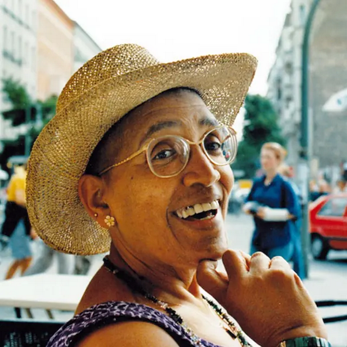

Audre Lorde: The Berlin Years 1984-1992
Dir. Dagmar Schultz
Germany, 2012, 79 min.
Digital Format
The poet, writer, and activist Audre Lorde was born February 18th, 1934, to Caribbean immigrant parents in New York City. This February, to celebrate the birthday of the self-described “Black, lesbian, feminist, socialist, mother, warrior, poet,” join us for a screening of AUDRE LORDE: THE BERLIN YEARS 1984-1992 to learn more about her connections to Germany and Black German activism. The film will be introduced by Bryana Jones, Ph.D. candidate in the Department of Black Studies at Northwestern University, who will reflect on Lorde’s significance to the development of Black feminist and queer theory and her connections to international movements for social justice.
This documentary explores a little-known chapter of the writer’s prolific life, a period in which she helped ignite the Afro-German Movement and made lasting contributions to the German political and cultural scene before and after the fall of the Berlin Wall. Lorde mentored and encouraged Black German women to write and publish as a way of asserting their identities, rights and culture in a society that isolated and silenced them, while she challenged white German women to acknowledge and constructively use their white privilege.
This documentary contains previously unreleased audiovisual material from director Dagmar Schultz’s personal archive, including stunning images of Audre Lorde off stage. With testimony from Lorde’s colleagues, students and friends, this film documents Lorde’s lasting legacy in Germany. The film includes appearances from, among others: May Ayim, Katharina Oguntoye, Gloria I. Joseph, Ilona Bubeck, Traude Bührmann, as well as Ika Hügel-Marshall and Ria Cheatom, both of whom collaborated on the making of this film.
ABOUT THE SPEAKER
Bryana Jones is a Ph.D. candidate in the Department of Black Studies at Northwestern University. With a background in Women’s, Gender, and Sexuality Studies, Bryana has taught courses at Georgia State University, Spelman College, and Northwestern University, including a recent critical theory and literature course titled “The Poetics and Erotics of Audre Lorde.” Bryana’s research interests include Black queer and trans feminisms; queer masculinities; affect; storytelling and/as theory; Lordean poetics and erotics; and the historical development of racialized genders and sexualities in U.S. and non-U.S. contexts. Her current project theorizes how queer Black people mobilize affect and feeling to articulate gendered and sexed ways of being outside of and beyond white supremacist constraint.